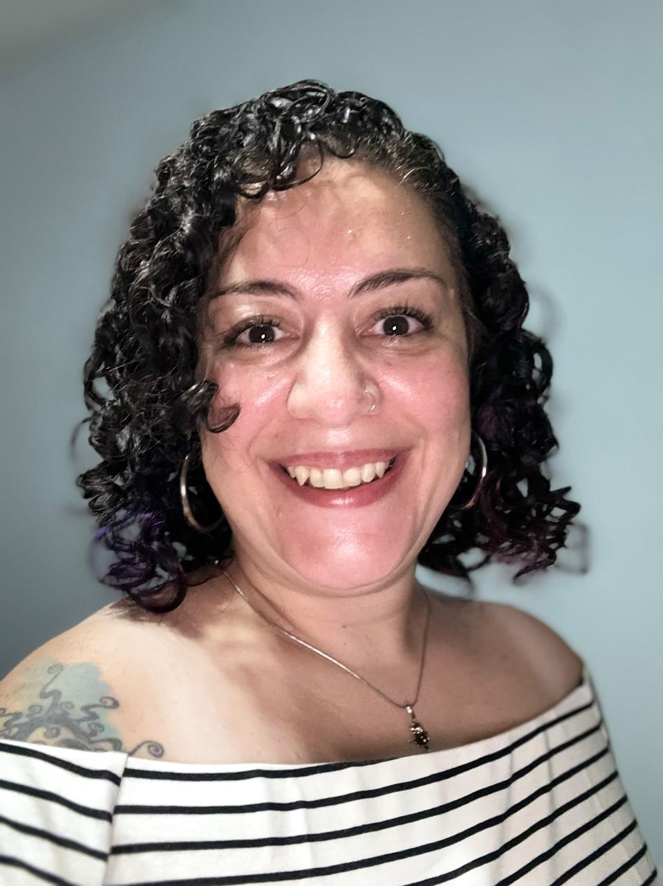

|  |
Daniela Páez De Miguel |
Mi nombre es Daniela y seguramente lo primero que te diga es que me llames “Dani”. Vivo en Avellaneda (provincia de Buenos Aires) y tengo 40 años.
Decidí comenzar la carrera de Licenciatura en Gestión de Tecnología de la Información para progresar más en mi carrera profesional y adquirir conocimientos que voy a necesitar a lo largo del camino. Trabajo en un banco internacional como Business Analyst y Product Manager. Me encanta ser mentora y dar presentaciones o trainings dentro de la empresa.
Dentro de mis hobbies está leer, armar rompecabezas, mirar series (o películas!), conocer lugares nuevos, viajar, ir al teatro o recitales y, por sobre todas las cosas, pasar tiempo con amigos y las personas que quiero.
With no risks there’s no story… 🧩🌘☕🐼✈📚🎫🎥🏳🌈